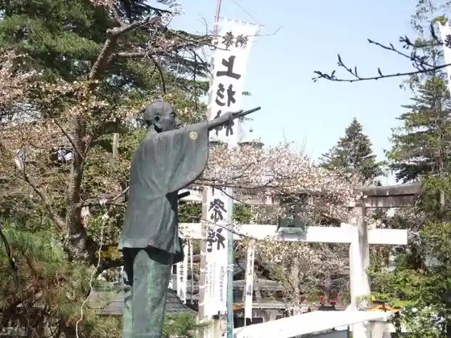
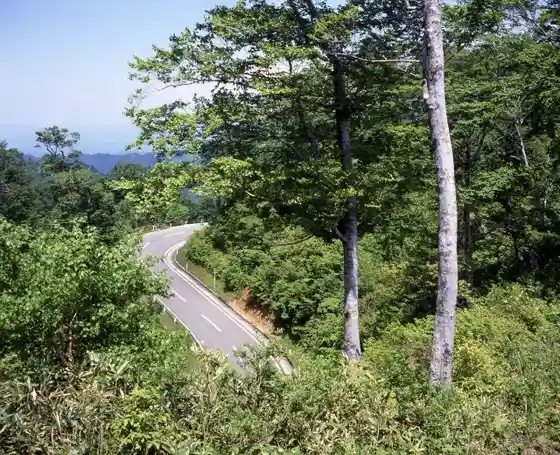
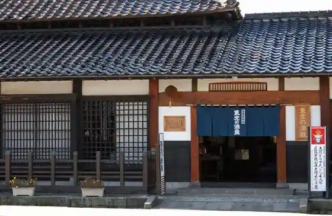
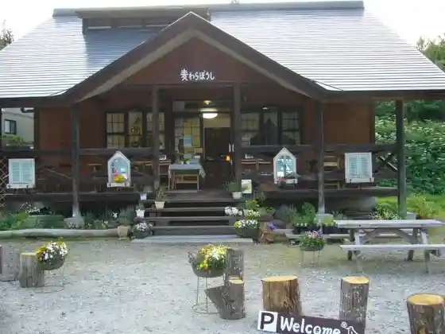

Uesugi Shrine
Yonezawa, Yamagata · 0238-22-3189 · Official / source link
Yonezawa Joshi / Matsugamisaki Park
Yonezawa, Yamagata · 0238-21-6226 · Official / source link

Nishi Azuma Sukaibare
Yonezawa, Yamagata · 0238-26-6079 · Official / source link

Shuzo Museum Toko no Shuzo
Yonezawa, Yamagata · 0238-21-6601 · Official / source link

Mugiwara Boshi (Kanko Kuri Sono)
Yonezawa, Yamagata · 0238-32-2116 · Official / source link

Tengendai Highlands
Yonezawa, Yamagata · 0238-55-2236 · Official / source link
Uesugi Kabyo Tokoro
Yonezawa, Yamagata · 0238-23-3115 · Official / source link
Namerikawa Otaki
Yonezawa, Yamagata · 0238-22-5111 · Official / source link
Koshi Daikoku Amamoto Yama (Nenju Zukuri, Shakyo Nado)
Yonezawa, Yamagata · 0238-32-2929 · Official / source link
Uesugi Memorial Museum (Kyu Uesugi Hakushaku Tei)
Yonezawa, Yamagata · 0238-21-5121 · Official / source link
Roadside Station (Yonezawa)
Yonezawa, Yamagata · 0238-40-8400 · Official / source link
Denkoku no Mori Yonezawa Uesugi Museum
Yonezawa, Yamagata · 0238‐26‐8001 · Official / source link
Hakufu Onsen
Yonezawa, Yamagata · Official / source link
Uba Yu Onsen (Masugata Ya)
Yonezawa, Yamagata · 0238-35-2633 · Official / source link
Onokawa Onsen
Yonezawa, Yamagata · 0238-32-2740 · Official / source link
Oitama Onsen (Tamamono Baths)
Yonezawa, Yamagata · 0238-37-4126 · Official / source link
Nishi Azuma Yama
Yonezawa, Yamagata · 0238-21-6226 · Official / source link
Roadside Station (Tazawa) Nagomi no Sato
Yonezawa, Yamagata · 0238-31-2753 · Official / source link
Hakufu Otaki
Yonezawa, Yamagata · 0238-22-5111 · Official / source link
Matsu Misaki Shrine
Yonezawa, Yamagata · 0238-22-3189 · Official / source link
Onokawa Onsen Kyodo Bath (Ama Yu) (Taki Baths)
Yonezawa, Yamagata · 0238-32-2740 · Official / source link
Uesugi Jinja Keisho Dono
Yonezawa, Yamagata · 0238-22-3189 · Official / source link
Yonezawa Orimono Chokubai Tokoro Orijin
Yonezawa, Yamagata · 0238-23-3525 · Official / source link
Onari Yama Park
Yonezawa, Yamagata · 0238-22-5111 · Official / source link
Tengendai Kogen Ski Area
Yonezawa, Yamagata · 0238-55-2236 · Official / source link
Do Mori Zenkoji
Yonezawa, Yamagata · 0238-28-1638 · Official / source link
Oitama Koiki Kankoannai Center ASK (Asuku)
Yonezawa, Yamagata · 0238-24-2965 · Official / source link
Kasuga Sanrin Izumi Tera
Yonezawa, Yamagata · 0238-23-0601 · Official / source link
Senshoku Workshop Wakuwaku Kan (Yonezawa Shoku no Teori Experience Benibana Some Experience)
Yonezawa, Yamagata · 0238-24-0268 · Official / source link
Wa Niwa
Yonezawa, Yamagata · 0238-21-5121 · Official / source link
Miyasaka Koko Kan
Yonezawa, Yamagata · 0238-23-8530 · Official / source link
Kyu Yonezawa Koto Kogyo Gakko Honkan
Yonezawa, Yamagata · 0238-26-3005 · Official / source link
Yonezawa Onsen (Heian Baths) (2026 Nen 2 Gatsu Genzai Kyugyochu)
Yonezawa, Yamagata · 0238-36-0100 · Official / source link
Onokawa Onsen Hotaru Park
Yonezawa, Yamagata · 0238-32-2740 · Official / source link
Kazue Yama Togen In (Soto Shu) / Oitama Sanju San Kannon Dai 23 Ban Kawai Kannon
Yonezawa, Yamagata · 0238-28-1131 · Official / source link
Sho Town no Yu Yamaboshi
Yonezawa, Yamagata · 0238-32-2277 · Official / source link
Tombo Tama to Mingei Washi Yamatoya (Tombo Gyokusei Saku Experience)
Yonezawa, Yamagata · 0238-23-1118 · Official / source link
yuge (Kyu Yonezawa Shinrin Taiken Koryu Center)
Yonezawa, Yamagata · 0238-33-2675 · Official / source link
Genshi Nuno Kodai Shoku Sanko Kan (Dewa no Shoku Za Yonezawa Mingei Kan)
Yonezawa, Yamagata · 0238-22-8141 · Official / source link
Kaen Taki
Yonezawa, Yamagata · 0238-22-5111 · Official / source link
Chomei Yama Kotoku In (Shingonshu) / Oitama Sanju San Kannon Dai 19 Ban Sasano Kannon
Yonezawa, Yamagata · 0238-38-5517 · Official / source link
Soryu Kyo Lookout (Aka Taki Kurotaki)
Yonezawa, Yamagata · 0238-22-5111 · Official / source link
Sasano Mingei Kan
Yonezawa, Yamagata · 0238-38-4288 · Official / source link
Yonezawa Ski Area
Yonezawa, Yamagata · 0238-28-2511 · Official / source link
Tsunenobu Iori
Yonezawa, Yamagata · 0238-23-2353 · Official / source link
Goshiki Onsen Oto Campground
Yonezawa, Yamagata · 0238-34-2510 · Official / source link
Sachi Rinko Gei (Mokko Akusesarii Zukuri Experience)
Yonezawa, Yamagata · 0238-23-5598 · Official / source link
Sho Town Yama Hoshu Tera (Shingonshu) / Oitama Sanju San Kannon Dai 21 Ban Onokawa Kannon
Yonezawa, Yamagata · 0238-32-2929 · Official / source link
Renge Yama Fumon Tera (Shingonshu) / Oitama Sanju San Kannon Dai 24 Ban Kuwayama Kannon
Yonezawa, Yamagata · 0238-28-4052 · Official / source link
Onokawa Onsen (Takasago Ya)
Yonezawa, Yamagata · 0238-32-2224 · Official / source link
Yottette CAFFE (Nakayama Orchard)
Yonezawa, Yamagata · 0238-22-0865 · Official / source link
Zen Hiyama Chikatsu In
Yonezawa, Yamagata · 0238-23-2995 · Official / source link
Sa Shi Izumi Park
Yonezawa, Yamagata · 0238-22-5111 · Official / source link
Sekine Otaki
Yonezawa, Yamagata · 0238-22-5111 · Official / source link
Man Mine Yama Kanematsu Tera (Soto Shu) / Oitama Sanju San Kannon Dai 1 Ban Ue Kosuge Kannon
Yonezawa, Yamagata · 0238-37-4717 · Official / source link
Enichi Yama Saimyo Tera (Shingonshu) / Oitama Sanju San Kannon Dai 26 Ban Toyama Kannon
Yonezawa, Yamagata · 0238-22-0568 · Official / source link
Naoe Kanetsugu Fufu no Haka
Yonezawa, Yamagata · 0238-23-0601 · Official / source link
Wagatsuma Kanko Orchard
Yonezawa, Yamagata · 0238-28-5431 · Official / source link
Namerikawa Onsen (Fukushima Ya)
Yonezawa, Yamagata · 0238-34-2250 · Official / source link
Uesugi Bunka Eria
Yonezawa, Yamagata · 0238-21-6226 · Official / source link
Ukogi no Kakine
Yonezawa, Yamagata · 0238-22-5111 · Official / source link
Totsuka Yama Senyo In (Tendai Terakado Shu) / Oitama Sanju San Kannon Dai 33 Ban Totsuka Yama Kannon
Yonezawa, Yamagata · 0238-28-1706 · Official / source link
Yoshizawa Fudo Taki
Yonezawa, Yamagata · 0238-22-5111 · Official / source link
Uesugi Harunori Takashi Shi Ko Gei Ato (Haguro Shrine)
Yonezawa, Yamagata · 0238-22-5111 · Official / source link
Mizukubo Dam
Yonezawa, Yamagata · 0238-23-0015 · Official / source link
Togen Tera
Yonezawa, Yamagata · 0238-21-0125 · Official / source link
Benibana Some Nitta
Yonezawa, Yamagata · 0238-23-7717 · Official / source link
Onokawa Onsen Ski Area
Yonezawa, Yamagata · 0238-32-2121 · Official / source link
Ohira Onsen (Takimi Ya)
Yonezawa, Yamagata · 0238-38-3360 · Official / source link
Tateyama Castle Ruins
Yonezawa, Yamagata · 0238-22-5111 · Official / source link
Magariya Nadera (Soba Uchi Experience)
Yonezawa, Yamagata · 0120-38-4636 · Official / source link
Onokawa Onsen (Kameya Mannen Kaku)
Yonezawa, Yamagata · 0238-32-2011 · Official / source link
Hon Tera
Yonezawa, Yamagata · 0238-22-2095 · Official / source link
Takakuni Tera
Yonezawa, Yamagata · 0238-23-2179 · Official / source link
Kanpo Some Sugawara Workshop
Yonezawa, Yamagata · 0238-23-9286 · Official / source link
RURALGLAM SOLASITA
Yonezawa, Yamagata · 0238-20-5525 · Official / source link
Benibana Village Sei Sono Workshop
Yonezawa, Yamagata · 0238-23-6001 · Official / source link
Ken Kyu Taki
Yonezawa, Yamagata · 0238-22-5111 · Official / source link
Narushima Hachiman Shrine
Yonezawa, Yamagata · 0238-37-5129 · Official / source link
Shiono Bishamon Do
Yonezawa, Yamagata · 0238-22-1198 · Official / source link
Tateyama Tera
Yonezawa, Yamagata · 0238-23-0558 · Official / source link
San Kasumi Kan Iseki
Yonezawa, Yamagata · 0238-22-5111 · Official / source link
Totsuka Yama Burial Mound
Yonezawa, Yamagata · 0238-28-1706 · Official / source link
Kome Tokuyama Miroku In (Shingonshu) / Oitama Sanju San Kannon Dai 15 Ban Hi no Me Kannon
Yonezawa, Yamagata · 0238-22-4199 · Official / source link
Haguro Yama Ryu Sei In (Shingonshu) / Oitama Sanju San Kannon Dai 25 Ban Akashiba Kannon
Yonezawa, Yamagata · 0238-32-2528 · Official / source link
Shin Kineya
Yonezawa, Yamagata · 0238-22-1311 · Official / source link
Ichinen Mine
Yonezawa, Yamagata · 0238-22-5111 · Official / source link
no Village Bunka Kenkyusho (Oitama Folk Museum)
Yonezawa, Yamagata · 0238-37-5362 · Official / source link
Suzuki Farm (Yonezawa)
Yonezawa, Yamagata · 0238-38-6266 · Official / source link
Takayama Baths
Yonezawa, Yamagata · 0238-37-7526 · Official / source link
Shirako Shrine
Yonezawa, Yamagata · 0238-21-3482 · Official / source link
Tsuneyasu Tera
Yonezawa, Yamagata · 0238-21-6321 · Official / source link
Kitayama Hara Junkyo Iseki
Yonezawa, Yamagata · 0238-22-5111 · Official / source link
Ue Village Orchard
Yonezawa, Yamagata · 0238-23-4107 · Official / source link
Kojima So Main Shop (Toko)
Yonezawa, Yamagata · 0238-23-4848 · Official / source link
Fumon In
Yonezawa, Yamagata · 0238-35-2750 · Official / source link
Shido Iseki
Yonezawa, Yamagata · 0238-22-5111 · Official / source link
Yu no Sawa Onsen (Toki no Yado Sumire)
Yonezawa, Yamagata · 0238-35-2234 · Official / source link
Kozogataki
Yonezawa, Yamagata · 0238-22-5111 · Official / source link
Koshu Fujin Kikuhime no Haka
Yonezawa, Yamagata · 0238-23-0601 · Official / source link
Sekiden no Hi
Yonezawa, Yamagata · 0238-22-5111 · Official / source link
Takeda Daizen Taifu Nobukiyo no Haka
Yonezawa, Yamagata · 0238-23-0601 · Official / source link
Nono Hanazome Workshop
Yonezawa, Yamagata · 0238-23-0748 · Official / source link
Sen Taki
Yonezawa, Yamagata · Official / source link
Koshi Ta Higashi Iseki
Yonezawa, Yamagata · 0238-22-5111 · Official / source link
Saimyo Tera no Tora no Omomi
Yonezawa, Yamagata · 0238-22-0568 · Official / source link
Uesugi Gi Sanko Hi / Matsugamisaki Park
Yonezawa, Yamagata · 0238-22-5111 · Official / source link
Cho Town Ura no Ezoe no Ki
Yonezawa, Yamagata · 0238-22-5111 · Official / source link
Yamagami no Dai Kuwa
Yonezawa, Yamagata · 0238-22-5111 · Official / source link
Atago Shrine (Yonezawa)
Yonezawa, Yamagata · 0238-23-3268 · Official / source link
Sen Me Tera
Yonezawa, Yamagata · 0238-37-3708 · Official / source link
Ichiji Ichi Namida no Hi (Fumon In)
Yonezawa, Yamagata · 0238-35-2750 · Official / source link
Sho Yo Tera
Yonezawa, Yamagata · 0238-23-1586 · Official / source link
Kuroi Seki
Yonezawa, Yamagata · 0238-22-5111 · Official / source link
Kami Tatsuaki Kami
Yonezawa, Yamagata · 0238-22-5111 · Official / source link
Ichi no Saka Iseki
Yonezawa, Yamagata · 0238-22-5111 · Official / source link
Shioi Shrine no E no Ki
Yonezawa, Yamagata · 0238-22-5111 · Official / source link
Nasu Yo City no Kuyo to
Yonezawa, Yamagata · 0238-22-5111 · Official / source link